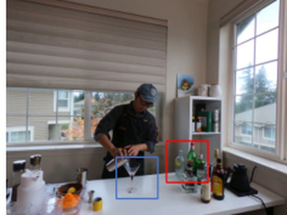
publications
Also on Google Scholar. All entries are available as BibTeX.
2026
2025
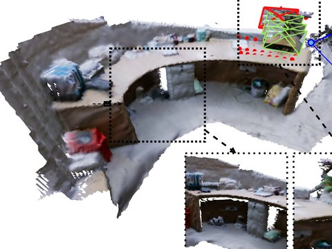
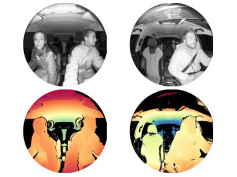
2024
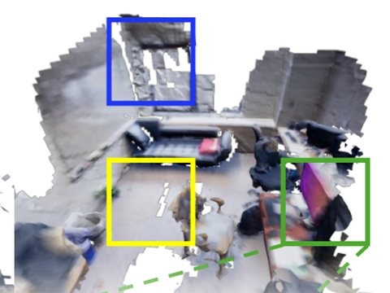
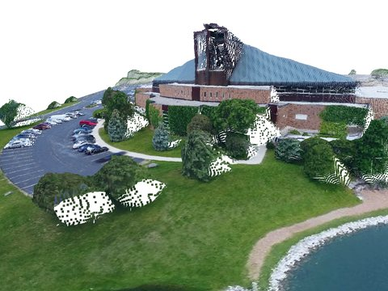
2022
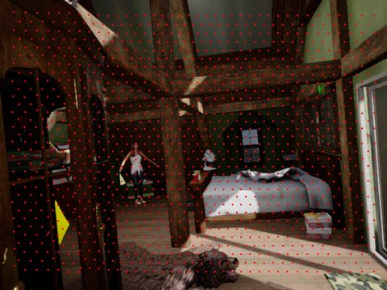
2019
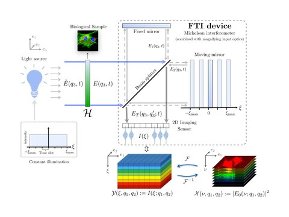
A Variable Density Sampling Scheme for Compressive Fourier Transform Interferometry
SIAM J. Imaging Sciences, 2019
2018
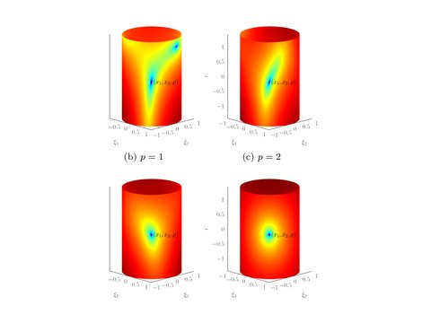
Through the Haze: A Non-Convex Approach to Blind Gain Calibration for Linear Random Sensing Models
Information and Inference, 2018
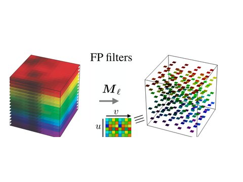
Multispectral Compressive Imaging Strategies Using Fabry–Pérot Filtered Sensors
IEEE Trans. Computational Imaging, 2018
2017
Time for Dithering: Fast and Quantized Random Embeddings via the Restricted Isometry Property
Information and Inference, 2017
Rakeness-Based Design of Low-Complexity Compressed Sensing
IEEE Trans. Circuits and Systems I, 2017
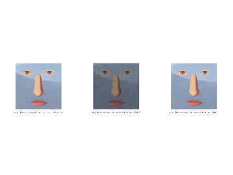
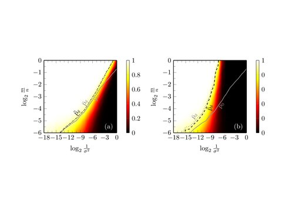
2016
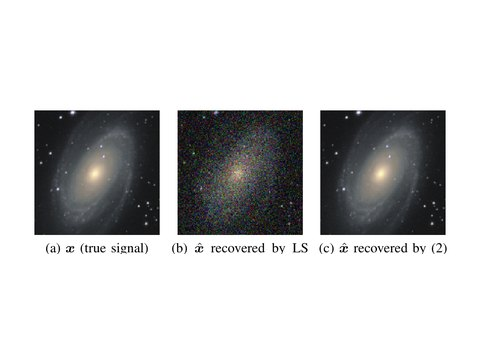
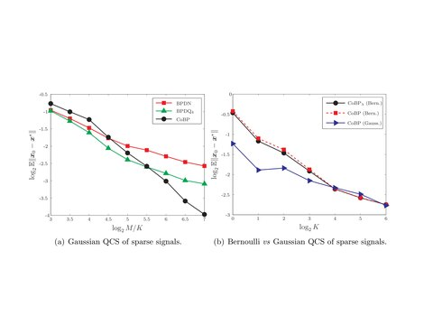
Consistent Basis Pursuit for Signal and Matrix Estimates in Quantized Compressed Sensing
IEEE Signal Processing Letters, 2016
2015
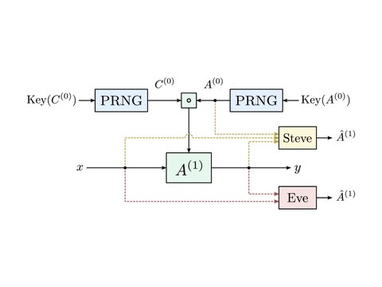
On Known-Plaintext Attacks to a Compressed Sensing-Based Encryption: A Quantitative Analysis
IEEE Trans. Information Forensics and Security, 2015
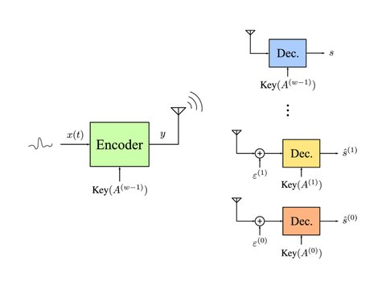
Low-Complexity Multiclass Encryption by Compressed Sensing
IEEE Trans. Signal Processing, 2015
A Case Study in Low-Complexity ECG Signal Encoding: How Compressing is Compressed Sensing?
IEEE Signal Processing Letters, 2015
A Soft-Defined Pulse Width Modulation Approach—Part I: Principles
IEEE Trans. Circuits and Systems I, 2015
A Soft-Defined Pulse Width Modulation Approach—Part II: System Modeling
IEEE Trans. Circuits and Systems I, 2015
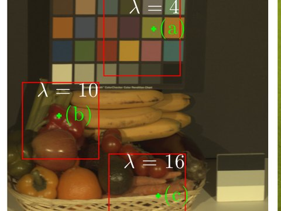
Matrix Designs and Methods for Secure and Efficient Compressed Sensing
Ph.D. thesis, University of Bologna, 2015 (Doctor Europaeus)